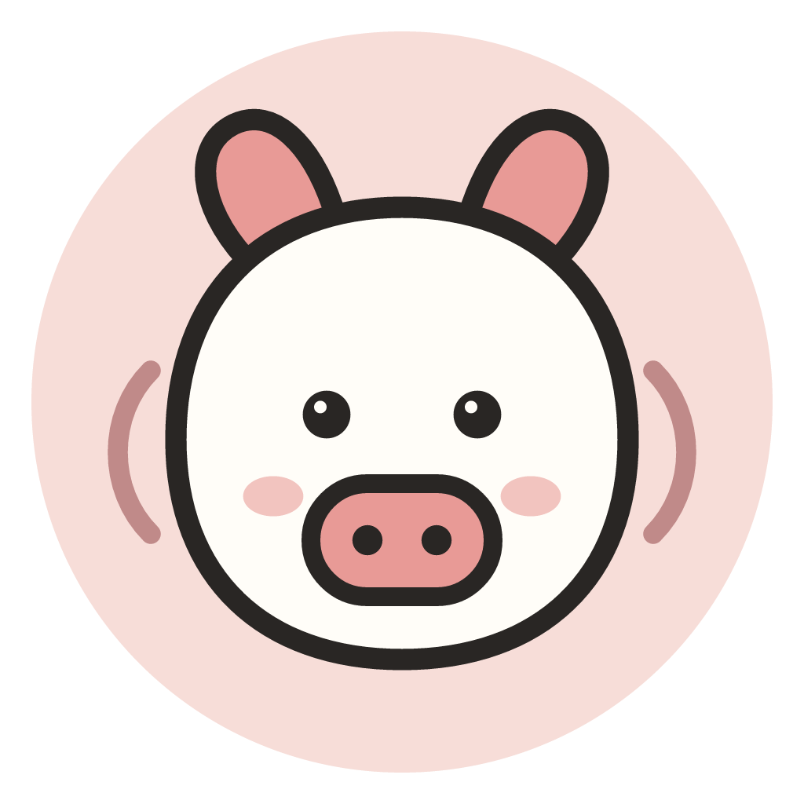

<template id="outro-template">
  <div
    data-composition-id="05-outro"
    data-width="1080"
    data-height="1920"
    data-duration="4"
  >
    <div class="scene-content" data-layout-allow-overlap>
      <div class="outro-aura" data-layout-ignore></div>
      <div class="ghost-brand" aria-hidden="true" data-layout-ignore></div>
      <div class="ring ring-one" data-layout-ignore></div>
      <div class="ring ring-two" data-layout-ignore></div>
      <div class="ring ring-three" data-layout-ignore></div>

      <div class="outro-ui">
        <div class="brand-mark">
          
          <div class="stamp-ring"></div>
        </div>

        <div class="brand-name">声账</div>
        <div class="brand-claim">说一句，就记好。</div>

        <div class="outro-wave">
          <i></i><i></i><i></i><i></i><i></i><i></i><i></i><i></i><i></i>
        </div>

        <div class="outro-note">
          <span>语音优先</span>
          <i></i>
          <span>本地账本</span>
          <i></i>
          <span>Android 内测中</span>
        </div>
      </div>

      <div class="end-index">SHENGZHANG · 2026</div>
    </div>

    <style>
      @font-face {
        font-family: "PingFang SC";
        src: local("PingFang SC");
      }

      @font-face {
        font-family: "Hiragino Sans GB";
        src: local("Hiragino Sans GB");
      }

      @font-face {
        font-family: "Songti SC";
        src: local("Songti SC");
      }

      @font-face {
        font-family: "STSong";
        src: local("STSong");
      }

      @font-face {
        font-family: "Noto Serif CJK SC";
        src: local("Noto Serif CJK SC");
      }

      [data-composition-id="05-outro"] {
        width: 1080px;
        height: 1920px;
        overflow: hidden;
        color: #292624;
        background:
          radial-gradient(circle at 50% 39%, rgba(232, 154, 150, 0.3), rgba(250, 247, 240, 0) 27%),
          radial-gradient(circle at 12% 92%, rgba(158, 173, 152, 0.2), rgba(250, 247, 240, 0) 28%),
          #faf7f0;
        font-family: "PingFang SC", "Hiragino Sans GB", sans-serif;
      }

      [data-composition-id="05-outro"] .scene-content {
        position: relative;
        display: flex;
        flex-direction: column;
        align-items: center;
        width: 100%;
        height: 100%;
        padding: 90px 68px 58px;
        overflow: hidden;
      }

      [data-composition-id="05-outro"] .outro-aura {
        position: absolute;
        top: 300px;
        left: 50%;
        width: 900px;
        height: 900px;
        margin-left: -450px;
        border-radius: 50%;
        background: radial-gradient(
          circle,
          rgba(232, 154, 150, 0.18),
          rgba(232, 154, 150, 0) 67%
        );
      }

      [data-composition-id="05-outro"] .ghost-brand {
        position: absolute;
        top: 790px;
        left: 50%;
        color: rgba(41, 38, 36, 0.034);
        font-family: "Songti SC", "STSong", serif;
        font-size: 430px;
        font-weight: 700;
        white-space: nowrap;
        transform: translateX(-50%);
      }

      [data-composition-id="05-outro"] .ghost-brand::before {
        content: "声账";
      }

      [data-composition-id="05-outro"] .ring {
        position: absolute;
        top: 738px;
        left: 50%;
        border: 1px solid rgba(157, 86, 87, 0.13);
        border-radius: 50%;
      }

      [data-composition-id="05-outro"] .ring-one {
        width: 500px;
        height: 500px;
        margin-left: -250px;
      }

      [data-composition-id="05-outro"] .ring-two {
        width: 720px;
        height: 720px;
        margin: -110px 0 0 -360px;
        border-color: rgba(157, 86, 87, 0.08);
      }

      [data-composition-id="05-outro"] .ring-three {
        width: 940px;
        height: 940px;
        margin: -220px 0 0 -470px;
        border-color: rgba(157, 86, 87, 0.045);
      }

      [data-composition-id="05-outro"] .outro-ui {
        position: relative;
        z-index: 5;
        display: flex;
        flex-direction: column;
        align-items: center;
        width: 100%;
        margin-top: 258px;
      }

      [data-composition-id="05-outro"] .brand-mark {
        position: relative;
        width: 260px;
        height: 260px;
      }

      [data-composition-id="05-outro"] .brand-mark img {
        width: 260px;
        height: 260px;
        object-fit: contain;
        filter: drop-shadow(0 24px 38px rgba(157, 86, 87, 0.13));
      }

      [data-composition-id="05-outro"] .stamp-ring {
        position: absolute;
        inset: -24px;
        border: 1px solid rgba(157, 86, 87, 0.17);
        border-radius: 50%;
        box-shadow:
          0 0 0 20px rgba(157, 86, 87, 0.045),
          0 0 0 42px rgba(157, 86, 87, 0.022);
      }

      [data-composition-id="05-outro"] .brand-name {
        margin-top: 62px;
        font-family: "Songti SC", "STSong", "Noto Serif CJK SC", serif;
        font-size: 132px;
        font-weight: 600;
        letter-spacing: 0.04em;
        line-height: 1;
      }

      [data-composition-id="05-outro"] .brand-claim {
        margin-top: 36px;
        color: #9d5657;
        font-family: "Songti SC", "STSong", serif;
        font-size: 66px;
        font-weight: 600;
        letter-spacing: -0.05em;
        white-space: nowrap;
      }

      [data-composition-id="05-outro"] .outro-wave {
        display: flex;
        align-items: center;
        justify-content: center;
        gap: 8px;
        height: 94px;
        margin-top: 70px;
      }

      [data-composition-id="05-outro"] .outro-wave i {
        display: block;
        width: 7px;
        border-radius: 999px;
        background: #e89a96;
      }

      [data-composition-id="05-outro"] .outro-wave i:nth-child(1),
      [data-composition-id="05-outro"] .outro-wave i:nth-child(9) {
        height: 22px;
      }

      [data-composition-id="05-outro"] .outro-wave i:nth-child(2),
      [data-composition-id="05-outro"] .outro-wave i:nth-child(8) {
        height: 42px;
      }

      [data-composition-id="05-outro"] .outro-wave i:nth-child(3),
      [data-composition-id="05-outro"] .outro-wave i:nth-child(7) {
        height: 64px;
      }

      [data-composition-id="05-outro"] .outro-wave i:nth-child(4),
      [data-composition-id="05-outro"] .outro-wave i:nth-child(6) {
        height: 82px;
      }

      [data-composition-id="05-outro"] .outro-wave i:nth-child(5) {
        height: 94px;
      }

      [data-composition-id="05-outro"] .outro-note {
        display: flex;
        align-items: center;
        gap: 17px;
        margin-top: 70px;
        color: #726b64;
        font-size: 22px;
        letter-spacing: 0.06em;
      }

      [data-composition-id="05-outro"] .outro-note i {
        width: 5px;
        height: 5px;
        border-radius: 50%;
        background: #b8afa6;
      }

      [data-composition-id="05-outro"] .end-index {
        position: relative;
        z-index: 5;
        margin-top: auto;
        color: #746d67;
        font-family: "Avenir Next", "DIN Alternate", sans-serif;
        font-size: 17px;
        letter-spacing: 0.16em;
      }
    </style>

    <script src="../assets/vendor/gsap.min.js"></script>
    <script>
      (function () {
        const root = '[data-composition-id="05-outro"]';
        const tl = gsap.timeline({ paused: true });

        tl.from(`${root} .brand-mark`, { scale: 0.72, opacity: 0, rotation: -9, duration: 0.64, ease: "back.out(1.7)" }, 0.2);
        tl.from(`${root} .stamp-ring`, { scale: 0.6, opacity: 0, duration: 0.62, ease: "expo.out" }, 0.34);
        tl.from(`${root} .brand-name`, { y: 52, opacity: 0, duration: 0.56, ease: "power4.out" }, 0.52);
        tl.from(`${root} .brand-claim`, { y: 32, opacity: 0, duration: 0.5, ease: "power3.out" }, 0.72);
        tl.from(`${root} .outro-wave i`, { scaleY: 0.12, opacity: 0, duration: 0.42, ease: "sine.inOut", stagger: 0.04 }, 0.9);
        tl.from(`${root} .outro-note`, { y: 20, opacity: 0, duration: 0.36, ease: "power2.out" }, 1.28);
        tl.from(`${root} .end-index`, { opacity: 0, duration: 0.34, ease: "sine.out" }, 1.55);
        tl.from(`${root} .ring`, { scale: 0.55, opacity: 0, duration: 0.78, ease: "expo.out", stagger: 0.09 }, 0.55);
        tl.from(`${root} .ghost-brand`, { y: 46, opacity: 0, duration: 0.8, ease: "sine.out" }, 0.36);

        tl.to(`${root} .outro-aura`, { scale: 1.08, y: -18, duration: 2.3, ease: "sine.inOut" }, 1.1);
        tl.to(`${root} .ring-one`, { rotation: 36, duration: 2.7, ease: "sine.inOut" }, 1.2);
        tl.to(`${root} .ring-two`, { rotation: -22, duration: 3, ease: "sine.inOut" }, 1.2);
        tl.to(`${root} .ghost-brand`, { x: 28, duration: 2.7, ease: "sine.inOut" }, 1.25);
        tl.to(`${root} .outro-wave i`, { scaleY: 0.72, duration: 0.42, ease: "sine.inOut", stagger: 0.035 }, 2);
        tl.to(`${root} .outro-wave i`, { scaleY: 1, duration: 0.48, ease: "sine.inOut", stagger: 0.035 }, 2.42);
        tl.to(`${root} .outro-ui`, { opacity: 0.96, duration: 0.32, ease: "sine.out" }, 3.5);

        window.__timelines = window.__timelines || {};
        window.__timelines["05-outro"] = tl;
      })();
    </script>
  </div>
</template>
